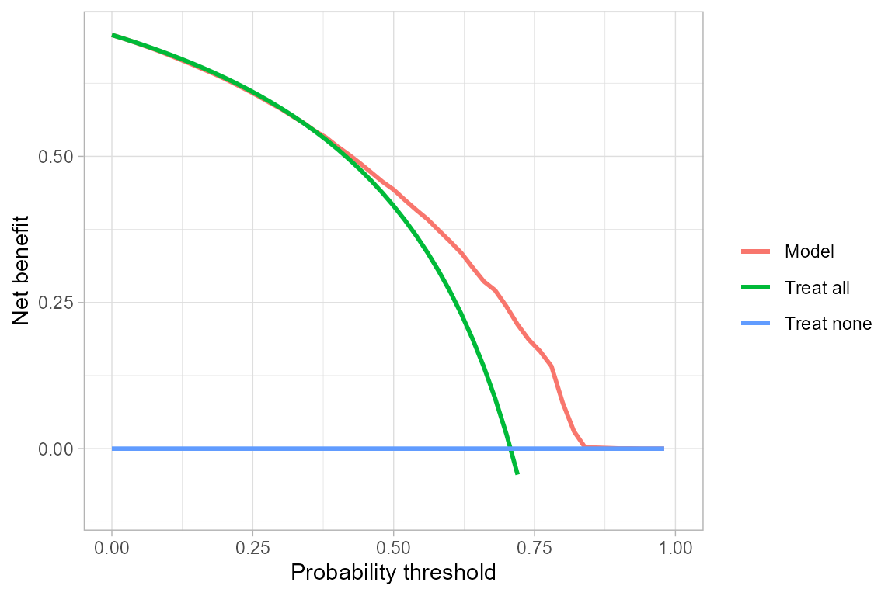

SurvValPlots_vignette.RmdThere are three main areas of clinical prediction model performance: discrimination, calibration, and net benefit. These can be assessed using receiver operating characteristic (ROC) curves, calibration curves, and decision curves. For ROC and calibration curves, it is important to also view confidence intervals or bands. Survival models often have censored data which makes ROC and calibration curves more difficult.
Previous packages either allow for right-censoring or give confidence intervals; however, there is not yet an easy method for both. This package was created to build upon previous methods and to fill the gap in current tools.
library(SurvValPlots)We will use two data sets from the survival (Therneau 2023) package to demonstrate the functions in survPlots
Rotterdam - 2,982 participants with breast cancer in the Rotterdam tumour bank (Royston and Altman 2013).
GBSG - 686 patients from the German Breast Cancer Study Group (Royston and Altman 2013).
A simple model will be developed using the Rotterdam data and the GBSG data will be used for external validation.
The function calcSS calculates the minimum required
sample size for the survival model development. It is a wrapper for
pmsampsize::pmsampsize (Ensor, Martin, and Riley 2022) with
the added functionality of the \(R^2\)
value being estimated from the event rate (Riley, Van Calster, and
Collins 2020) and allowing an imprecision in the event rate and mean
follow-up time to be specified.
Below is an example with an event rate of 10% at the prediction time of 3 years with 5 parameters used in the model and a mean follow-up time of 10 years. We allow for an imprecision of 20% in the rate and mean follow-up time. This gives a minimum sample size of 331 participants.
calcSS(
rate=0.1,
time=3,
parameters=5,
meanfollowup = 10,
imprecision = 0.2
)## NB: Assuming 0.05 acceptable difference in apparent & adjusted R-squared
## NB: Assuming 0.05 margin of error in estimation of overall risk at time point = 3
## NB: Events per Predictor Parameter (EPP) assumes overall event rate = 0.08
##
## Samp_size Shrinkage Parameter CS_Rsq Max_Rsq Nag_Rsq EPP
## Criteria 1 331 0.90 5 0.1264438 0.843 0.15 42.37
## Criteria 2 109 0.75 5 0.1264438 0.843 0.15 13.95
## Criteria 3 * 331 0.90 5 0.1264438 0.843 0.15 42.37
## Final SS 331 0.90 5 0.1264438 0.843 0.15 42.37
##
## Minimum sample size required for new model development based on user inputs = 331,
## corresponding to 2648 person-time** of follow-up, with 212 outcome events
## assuming an overall event rate = 0.08 and therefore an EPP = 42.37
##
## * 95% CI for overall risk = (0.188, 0.238), for true value of 0.213 and sample size n = 331
## **where time is in the units mean follow-up time was specified inTo demonstrate the package, we will develop a Cox proportional
hazards model using survival::coxph. This is the same model
as used by Royston and Altman (Royston and Altman 2013).
library(survival)
mod = coxph(Surv(rtime, recur)~size+meno+hormon+age+nodes+pgr+er,
data=rotterdam,
x=TRUE)
mod## Call:
## coxph(formula = Surv(rtime, recur) ~ size + meno + hormon + age +
## nodes + pgr + er, data = rotterdam, x = TRUE)
##
## coef exp(coef) se(coef) z p
## size20-50 3.893e-01 1.476e+00 5.795e-02 6.719 1.83e-11
## size>50 6.849e-01 1.984e+00 8.741e-02 7.835 4.68e-15
## meno 2.307e-01 1.259e+00 8.804e-02 2.620 0.008788
## hormon -7.450e-02 9.282e-01 8.265e-02 -0.901 0.367388
## age -1.315e-02 9.869e-01 3.465e-03 -3.795 0.000148
## nodes 7.734e-02 1.080e+00 4.522e-03 17.105 < 2e-16
## pgr -2.233e-04 9.998e-01 1.069e-04 -2.089 0.036680
## er -3.588e-05 1.000e+00 1.038e-04 -0.346 0.729477
##
## Likelihood ratio test=437.7 on 8 df, p=< 2.2e-16
## n= 2982, number of events= 1518ROC curves are one of the most reported visualisations of model performance.
survPlots(mod,
time=365.25*3,
df=rotterdam,
eventVar = "recur",
timeVar = "rtime",
plotType = "ROC")## Setting levels: control = 0, case = 1## Setting direction: controls < cases## Scale for x is already present.
## Adding another scale for x, which will replace the existing scale.Calibration curves are a vital, but overlooked performance metric
(Van Calster et al. 2019). There are several packages already available
in R for constructing calibration curves (Harrell Jr 2023; Sadatsafavi,
Safari, and Lee 2023; Van Calster et al. 2016; Gerds 2023). The
calibration curve in pec accounts for the right censored
data using the jackknife pseudo-values (Gerds 2023); however, no
confidence interval or band is displayed. Confidence intervals and bands
can be useful to show potential variation in the calibration. The
calibration curve in CalibrationCurves does have confidence
bands, but does not account for censoring.
The calibration curve in SurvValPlots uses the jackknife
pseudo-values to account for right-censoring and also uses loess
smoothing with 95% confidence bands.
survPlots(mod,
time=365.25*3,
df=rotterdam,
eventVar = "recur",
timeVar = "rtime",
plotType = "Calibration")## `geom_smooth()` using formula = 'y ~ x'The net benefit of a model can be define as
\[ NB = \frac{TP}{n}-\frac{FP}{n}\left(\frac{p}{1-p}\right)-H, \]
where
The harm of a model can be estimated in terms of how many patients the clinician is willing to put through the test to catch one positive case (\(N_p\)), with the harm being \(H=1/N_p\).
The net benefit can then be plotted across a range of clinically relevant probability thresholds. The net benefit of treating all or no patients as having the disease or condition can also be plotted for reference.
survPlots(mod,
time=365.25*3,
df=rotterdam,
eventVar = "recur",
timeVar = "rtime",
plotType = "Decision")## Warning: Removed 1 row containing missing values (`geom_line()`).
## Removed 1 row containing missing values (`geom_line()`).
Setting the option plotType="All" plots all three of the
graphs into one panel. This allows an easy visualisation of overall
discrimination, calibration, and net benefit at a chosen time point with
a single, short command.
survPlots(mod,
time=365.25*3,
df=rotterdam,
eventVar = "recur",
timeVar = "rtime",
plotType = "All")## Setting levels: control = 0, case = 1## Setting direction: controls < cases## Scale for x is already present.
## Adding another scale for x, which will replace the existing scale.
## `geom_smooth()` using formula = 'y ~ x'## Warning: Removed 1 row containing missing values (`geom_line()`).
## Removed 1 row containing missing values (`geom_line()`).
library(mfp)
mod <-mfp(
Surv(rtime, recur) ~
size+
meno+
hormon+
fp(age)+
fp(nodes)+
fp(pgr)+
fp(er),
data=rotterdam, family=cox)
summary(mod)## Call:
## coxph(formula = Surv(rtime, recur) ~ I(((nodes + 1)/10)^1) +
## I(((nodes + 1)/10)^1 * log(((nodes + 1)/10))) + size + I((age/100)^1) +
## meno + log(((pgr + 1)/100)) + hormon + I(((er + 1)/100)^1),
## data = rotterdam)
##
## n= 2982, number of events= 1518
##
## coef exp(coef) se(coef)
## I(((nodes + 1)/10)^1) 1.826226 6.210403 0.107358
## I(((nodes + 1)/10)^1 * log(((nodes + 1)/10))) -1.214831 0.296760 0.120093
## size20-50 0.285896 1.330953 0.058685
## size>50 0.490148 1.632558 0.088664
## I((age/100)^1) -1.306615 0.270735 0.346509
## meno 0.226782 1.254556 0.089468
## log(((pgr + 1)/100)) -0.041355 0.959488 0.012388
## hormon -0.322772 0.724139 0.085164
## I(((er + 1)/100)^1) -0.001214 0.998786 0.010190
## z Pr(>|z|)
## I(((nodes + 1)/10)^1) 17.011 < 2e-16 ***
## I(((nodes + 1)/10)^1 * log(((nodes + 1)/10))) -10.116 < 2e-16 ***
## size20-50 4.872 1.11e-06 ***
## size>50 5.528 3.24e-08 ***
## I((age/100)^1) -3.771 0.000163 ***
## meno 2.535 0.011252 *
## log(((pgr + 1)/100)) -3.338 0.000843 ***
## hormon -3.790 0.000151 ***
## I(((er + 1)/100)^1) -0.119 0.905129
## ---
## Signif. codes: 0 '***' 0.001 '**' 0.01 '*' 0.05 '.' 0.1 ' ' 1
##
## exp(coef) exp(-coef) lower .95
## I(((nodes + 1)/10)^1) 6.2104 0.1610 5.0320
## I(((nodes + 1)/10)^1 * log(((nodes + 1)/10))) 0.2968 3.3697 0.2345
## size20-50 1.3310 0.7513 1.1863
## size>50 1.6326 0.6125 1.3721
## I((age/100)^1) 0.2707 3.6937 0.1373
## meno 1.2546 0.7971 1.0528
## log(((pgr + 1)/100)) 0.9595 1.0422 0.9365
## hormon 0.7241 1.3810 0.6128
## I(((er + 1)/100)^1) 0.9988 1.0012 0.9790
## upper .95
## I(((nodes + 1)/10)^1) 7.6648
## I(((nodes + 1)/10)^1 * log(((nodes + 1)/10))) 0.3755
## size20-50 1.4932
## size>50 1.9424
## I((age/100)^1) 0.5339
## meno 1.4950
## log(((pgr + 1)/100)) 0.9831
## hormon 0.8557
## I(((er + 1)/100)^1) 1.0189
##
## Concordance= 0.68 (se = 0.007 )
## Likelihood ratio test= 559.1 on 9 df, p=<2e-16
## Wald test = 617.8 on 9 df, p=<2e-16
## Score (logrank) test = 684.6 on 9 df, p=<2e-16
survPlots(
model = mod,
time = 3*365.25,
df = rotterdam,
eventVar = "recur",
timeVar = "rtime",
plotType="All")## Setting levels: control = 0, case = 1## Setting direction: controls < cases## Scale for x is already present.
## Adding another scale for x, which will replace the existing scale.
## `geom_smooth()` using formula = 'y ~ x'## Warning: Removed 1 row containing missing values (`geom_line()`).
## Removed 1 row containing missing values (`geom_line()`).